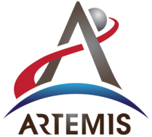

The Artemis program is an ongoing spaceflight program carried out by NASA, U.S. commercial spaceflight companies and international partners. with the goal of landing "the first woman and the next man" on the Moon, specifically at the lunar south pole region by 2024. NASA sees Artemis as the next step towards the long-term goal of establishing a sustainable presence on the Moon, laying the foundation for private companies to build a lunar economy, and eventually sending humans to Mars.
Click here to see more about Artemis Program.
Under Artemis' umbrella are several components. First is the Lunar Orbital Platform-Gateway, a station around the moon that would extend humanity's presence in space and provide a platform for scientific experiments and jaunts to the lunar surface.
The Gateway would be carried into lunar orbit by the agency's Space Launch System (SLS), a gigantic new rocket NASA is developing. Four-person crews would access the station using the Orion deep-space capsule and remain for 30 to 90 day stints.
Part of the Trump administration's push towards the moon includes an enlarged role for private aerospace firms, which are intended to develop hardware and potentially kick-start a lunar economy. NASA has awarded $45.5 million to 11 U.S. companies, including Elon Musk's SpaceX and Jeff Bezos' Blue Origin, to develop landers that can take astronauts to the moon's surface.
How many of these impressive plans will actually see fruition is difficult to tell at this point. Cost estimates are still being refined and the overall price tag of Artemis remains unknown. The Apollo program's budget ended up being a total of $23.6 billion in 1973 dollars, according to NASA, the equivalent of more than $136 billion today. That means each Apollo moon landing cost around $22.6 billion in 2019 dollars. President Trump has recently sought an addition $1.6 billion for the Artemis program, on top of the $21 billion already allocated to NASA, but has yet to get the money approved by Congress.
On 10 January 2020, NASA's astronaut group, nicknamed the "Turtles", graduated and were assigned to the Artemis program. The group includes two Canadian Space Agency (CSA) astronauts.
If you would like to participate in Artemis Program, please submit the Form.